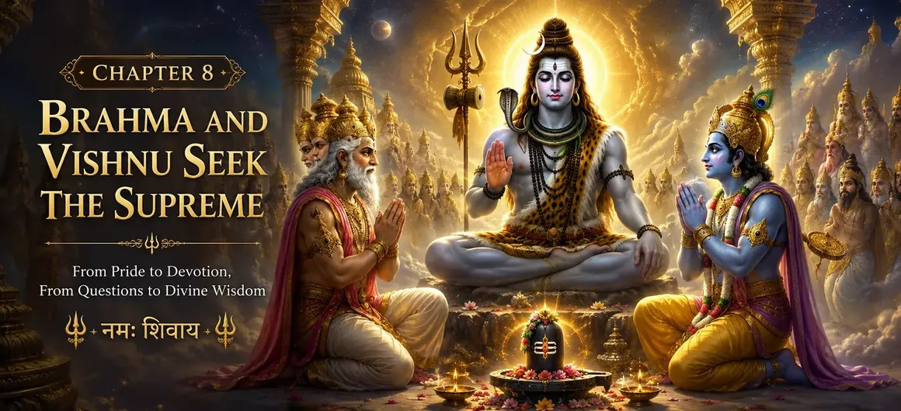

प्रकाश के अनंत स्तंभ को देखने और भगवान शिव की सर्वोच्चता के रहस्योद्घाटन के बाद, ब्रह्मा और विष्णु बदल गए। जिस घमंड ने एक समय उनके विवाद को बढ़ावा दिया था, उसकी जगह विनम्रता और आश्चर्य ने ले ली। उन्हें एहसास हुआ कि सर्वोच्च वास्तविकता सृजन और संरक्षण की शक्तियों से कहीं परे थी जिसका वे स्वयं प्रतिनिधित्व करते थे। भक्ति से भरकर, दोनों देवताओं ने महादेव के सामने झुककर गहन ज्ञान की खोज की। वे सर्वोच्च भगवान के वास्तविक स्वरूप, सभी अस्तित्व के स्रोत और उनके द्वारा देखे गए अनंत प्रकाश के पीछे के रहस्य को समझना चाहते थे। यह अध्याय विद्येश्वर संहिता में एक महत्वपूर्ण मोड़ का प्रतीक है। महानता पर बहस करने के बजाय, ब्रह्मा और विष्णु अब सत्य के ईमानदार खोजी बन गए हैं। उनकी खोज से भगवान शिव, दैवीय कृपा और ब्रह्मांड को नियंत्रित करने वाले शाश्वत सिद्धांतों के बारे में गहन खुलासे होते हैं। अध्याय दर्शाता है कि सच्चा ज्ञान तब शुरू होता है जब अहंकार समाप्त होता है और ईमानदारी से पूछताछ शुरू होती है।
भगवान शिव द्वारा सत्य प्रकट करने और ब्रह्मा के झूठे दावे को उजागर करने के बाद, निर्माता देवता शर्म और पश्चाताप से अभिभूत हो गए। वह अहंकार जो एक समय उसके निर्णय पर छाया हुआ था, पूरी तरह से गायब हो गया। अपनी गलती की गंभीरता को महसूस करते हुए, ब्रह्मा ने महादेव के सामने अपना सिर झुकाया और सच्चे दिल से माफ़ी मांगी। उस समय, भगवान विष्णु ने भी ब्रह्मा की ओर से हस्तक्षेप किया। शिव की असीम करुणा को याद करते हुए, विष्णु ने विनम्रतापूर्वक परम भगवान से ब्रह्मा के अपराध को क्षमा करने का अनुरोध किया। उन्होंने शिव को याद दिलाया कि गर्व और भ्रम से प्रभावित होकर महान प्राणी भी गलती में पड़ सकते हैं। भगवान शिव, जो न्याय प्रदान करने वाले और करुणा के अवतार दोनों हैं, ने विष्णु की विनती सुनी। हालाँकि ब्रह्मा को उनके झूठ के लिए दंडित किया गया था, फिर भी शिव ने उन्हें नहीं छोड़ा। इसके बजाय, उन्होंने ब्रह्मा को सत्य और विनम्रता का महत्व सिखाते हुए ब्रह्मांडीय व्यवस्था में उनकी पवित्र भूमिका जारी रखने की अनुमति दी। यह प्रकरण दर्शाता है कि सच्चे पश्चाताप में बड़ी शक्ति होती है। गंभीर गलती करने के बाद भी, जो ईमानदारी से गलत काम स्वीकार करता है और क्षमा मांगता है, उसे भगवान की कृपा प्राप्त हो सकती है।
हालाँकि भगवान शिव ने ब्रह्मा के धोखे का पर्दाफाश किया था और उन्हें झूठ बोलने के लिए दंडित किया था, लेकिन उन्होंने क्रोध या घृणा से कार्य नहीं किया। सर्वोच्च भगवान के कार्य न्याय, ज्ञान और करुणा से प्रेरित थे। उनका उद्देश्य ब्रह्मा को नष्ट करना नहीं था बल्कि उस अज्ञान और अहंकार को दूर करना था जिसने उन्हें भटका दिया था। शिव ने प्रदर्शित किया कि दैवीय दंड बदला लेने के लिए नहीं है। बल्कि, यह सुधार और आध्यात्मिक उत्थान के साधन के रूप में कार्य करता है। ब्रह्मा को विनम्र करके, शिव ने उन्हें सत्य के महत्व और अहंकार के खतरों को पहचानने में मदद की। जिन देवताओं ने इस घटना को देखा, उन्होंने एक महत्वपूर्ण आध्यात्मिक सिद्धांत को समझा: भगवान सख्त और दयालु दोनों हैं। वह धर्म को दृढ़ता से कायम रखता है, फिर भी वह उन लोगों को माफ करने के लिए हमेशा तैयार रहता है जो ईमानदारी से पश्चाताप करते हैं और धर्म के मार्ग पर लौटते हैं। इस प्रकार, ब्रह्मा की पुनर्स्थापना सभी प्राणियों के लिए एक सबक बन गई। चाहे किसी की गलती कितनी भी बड़ी क्यों न हो, महादेव की कृपा उन लोगों पर बनी रहती है जो विनम्रता, भक्ति और बदलाव की सच्ची इच्छा के साथ उनके पास आते हैं। शिव की करुणा देवताओं, ऋषियों और सामान्य भक्तों पर समान रूप से फैली हुई है।
देवताओं ने शिव को प्रकाश के अनंत स्तंभ के स्रोत के रूप में महिमामंडित किया, जिसका आरंभ और अंत कभी नहीं पाया जा सका।
सच्चे मन से पश्चाताप करने वालों के प्रति दया दिखाते हुए सत्य और न्याय की स्थापना करने के लिए शिव की प्रशंसा की गई।
देवताओं ने स्वीकार किया कि सृजन, संरक्षण और विघटन अंततः महादेव की शक्ति से उत्पन्न होते हैं।
इन दिव्य घटनाओं को देखकर देवता, ऋषि-मुनि और देवगण श्रद्धा से भर गए। उन्हें एहसास हुआ कि भगवान शिव केवल देवताओं के बीच एक अन्य देवता नहीं थे, बल्कि सर्वोच्च वास्तविकता थे जो पूरे अस्तित्व को बनाए रखते हैं। हाथ जोड़कर और समर्पित हृदय से, वे स्तुति के भजन प्रस्तुत करने लगे। उन्होंने शिव को सृष्टि की उत्पत्ति, संरक्षण का समर्थन और विनाश का स्रोत बताया। उन्होंने घोषणा की कि ब्रह्मांड में सभी शक्तियां अंततः उन्हीं से उत्पन्न होती हैं और उन्हीं में लौट जाती हैं। अनंत स्तंभ ने एक सत्य प्रकट किया था जिस पर अब कोई संदेह नहीं किया जा सकता था: सर्वोच्च भगवान एक साथ सभी रूपों में निवास करते हुए हर रूप से परे हैं। जैसे ही भजन आकाश में गूंजे, वातावरण दिव्य शांति से भर गया। देवताओं ने भक्ति और कृतज्ञता की गहरी भावना का अनुभव किया। अपनी प्रशंसा के माध्यम से, उन्होंने स्वीकार किया कि सच्ची महानता उन लोगों की नहीं है जो श्रेष्ठता चाहते हैं, बल्कि उसकी है जो सभी महानता का स्रोत है।
ब्रह्मा और विष्णु अब श्रेष्ठता नहीं बल्कि सच्चा ज्ञान चाहते थे।
उनकी खोज शक्ति और स्थिति से हटकर ज्ञान और दिव्य समझ की ओर स्थानांतरित हो गई।
दोनों देवता परमेश्वर के शाश्वत स्वरूप को समझना चाहते थे।
अनंत स्तंभ की महिमा को देखने और शिव की करुणा का अनुभव करने के बाद, ब्रह्मा और विष्णु में गहनतम आध्यात्मिक सत्य को समझने की तीव्र इच्छा विकसित हुई। उन्हें एहसास हुआ कि जो दर्शन उन्हें मिला था वह महज एक चमत्कार नहीं था बल्कि सर्वोच्च वास्तविकता का रहस्योद्घाटन था। श्रद्धा के साथ भगवान शिव के पास जाकर, उन्होंने अस्तित्व की प्रकृति, ब्रह्मांड की उत्पत्ति और सभी दिव्य शक्तियों के स्रोत के बारे में गहन प्रश्न पूछे। वे यह जानना चाहते थे कि कैसे परमेश्वर सृष्टि से परे भी हो सकता है और फिर भी सृष्टि के हर पहलू में मौजूद हो सकता है। उनके प्रश्न केवल जिज्ञासा से नहीं बल्कि सच्ची भक्ति से उठे थे। उस पवित्र क्षण में, दोनों देवता ब्रह्मांड के शाश्वत शिक्षक के सामने खड़े विनम्र छात्र बन गए।
वे समस्त सृष्टि और अस्तित्व के पीछे के अंतिम स्रोत को जानना चाहते थे।
वे अनंत प्रकाश के पीछे के रहस्य को समझना चाहते थे।
उनकी पूछताछ सच्चे आध्यात्मिक बोध की ओर ले जाने वाले मार्ग पर केंद्रित थी।
गहरी श्रद्धा के साथ भगवान शिव के सामने खड़े होकर, ब्रह्मा और विष्णु ने विनम्रतापूर्वक अपने प्रश्न प्रस्तुत किए। अनंत स्तंभ के दर्शन ने उनकी पिछली धारणाओं को तोड़ दिया था और उनमें ज्ञान के प्रति सच्ची प्यास जागृत हो गई थी। उन्होंने पूछा: वह सर्वोच्च सत्ता कौन है जो सृजन, संरक्षण और विघटन से परे है? वह कौन सा स्रोत है जहाँ से सभी दिव्य शक्तियाँ उत्पन्न होती हैं? ब्रह्मांड से परे अनंत कैसे अस्तित्व में है जबकि वह हर जीवित प्राणी के भीतर भी निवास करता है? ये प्रश्न घमंड या प्रतिस्पर्धा से पैदा नहीं हुए थे. वे भक्ति और उच्चतम सत्य को समझने की सच्ची इच्छा से उत्पन्न हुए थे। शिव उनकी ईमानदारी से प्रसन्न हुए, क्योंकि सच्चा ज्ञान तब शुरू होता है जब कोई व्यक्ति ज्ञान का दावेदार नहीं बल्कि साधक बन जाता है। इन सवालों के जवाब सर्वोच्च भगवान की प्रकृति से संबंधित गहन रहस्यों को उजागर करेंगे और सभी अस्तित्व के महान भगवान, महेश्वर के रूप में शिव के रहस्योद्घाटन का मार्ग तैयार करेंगे।
उनकी ईमानदारी को देखकर, भगवान शिव सर्वोच्च आध्यात्मिक ज्ञान प्रदान करने के लिए तैयार हुए।
ब्रह्मा और विष्णु के प्रश्नों ने गहन रहस्योद्घाटन का मार्ग खोल दिया।
भगवान अपने वास्तविक स्वरूप को सर्वोच्च वास्तविकता के रूप में प्रकट करने वाले थे।
भगवान शिव ब्रह्मा और विष्णु द्वारा दिखाई गई विनम्रता और भक्ति से प्रसन्न हुए। उनके हृदय प्रतिद्वंद्विता से मुक्त हो गए थे और सत्य जानने की सच्ची इच्छा से भर गए थे। उनकी तत्परता को पहचानते हुए, शिव ने उन शिक्षाओं को प्रकट करने का निर्णय लिया जो आमतौर पर महानतम दिव्य प्राणियों से भी छिपी होती हैं। वातावरण दिव्य शांति से परिपूर्ण हो गया। देवता, ऋषि-मुनि और स्वर्गीय प्राणी यह महसूस करते हुए कि एक गहन रहस्योद्घाटन होने वाला है, श्रद्धापूर्वक एकत्रित हो गए। हर मन अनंत प्रकाश के स्रोत महादेव पर केंद्रित था। शिव ने ब्रह्मा और विष्णु को करुणा से देखा और सर्वोच्च भगवान के रहस्यों, ब्रह्मांड की उत्पत्ति और सृष्टि को नियंत्रित करने वाले शाश्वत सिद्धांतों को समझाने के लिए तैयार हुए। जो ज्ञान प्रकट होने वाला था वह न केवल उनके प्रश्नों का उत्तर देगा बल्कि भविष्य के युगों में अनगिनत साधकों का मार्गदर्शन भी करेगा। इस प्रकार उनकी खोज का प्रारंभिक चरण समाप्त हुआ। विद्येश्वर संहिता के सबसे महत्वपूर्ण रहस्योद्घाटन में से एक यह है - शिव को महेश्वर के रूप में घोषित करना, महान भगवान जो सभी सीमाओं को पार करते हैं और पूरे ब्रह्मांड में व्याप्त हैं।
प्रकाश के अनंत स्तंभ को देखकर ब्रह्मा और विष्णु ने अपना अहंकार त्याग दिया।
दोनों देवता भक्ति और सच्चाई जानने की सच्ची इच्छा के साथ भगवान शिव के पास पहुंचे।
यह अध्याय पाठक को अगले अध्याय में सर्वोच्च भगवान के रूप में शिव के रहस्योद्घाटन के लिए तैयार करता है।
अध्याय 8 ब्रह्मा और विष्णु की आध्यात्मिक यात्रा में एक महत्वपूर्ण परिवर्तन का प्रतीक है। शिव की अनंत महिमा को देखने के बाद, वे गर्व और प्रतिद्वंद्विता से विनम्रता और ईमानदारी से पूछताछ की ओर बढ़ते हैं। उनके प्रश्न अब श्रेष्ठता से संबंधित नहीं हैं, बल्कि उच्चतम सत्य को समझने से संबंधित हैं। अध्याय सिखाता है कि दिव्य ज्ञान तभी प्राप्त होता है जब अहंकार का समर्पण हो जाता है। भक्ति, विनम्रता और सीखने की सच्ची इच्छा के माध्यम से, सबसे महान प्राणी भी भगवान की कृपा प्राप्त करने के योग्य बन जाते हैं। यह पवित्र संवाद अब सीधे सभी सीमाओं से परे सर्वोच्च वास्तविकता, महेश्वर के रूप में शिव के रहस्योद्घाटन की ओर ले जाता है।
"जब अहंकार गायब हो गया, ब्रह्मा और विष्णु सत्य के खोजी बन गए। विनम्रता, भक्ति और ईमानदारी से पूछताछ के माध्यम से, वे सर्वोच्च भगवान के पास पहुंचे और दिव्य ज्ञान प्राप्त करने के लिए खुद को तैयार किया।"
कई हिंदू धर्मग्रंथों में, ब्रह्मा और विष्णु को सबसे महान देवताओं के रूप में चित्रित किया गया है, फिर भी शिव पुराण बार-बार इस बात पर जोर देता है कि सबसे शक्तिशाली देवता भी भगवान शिव से उच्च ज्ञान चाहते हैं। यह अध्याय एक महत्वपूर्ण मोड़ का प्रतीक है जहां ब्रह्मा और विष्णु श्रेष्ठता के लिए प्रतिस्पर्धा करना बंद कर देते हैं और दिव्य ज्ञान के ईमानदार साधक बन जाते हैं। उनका परिवर्तन एक महत्वपूर्ण आध्यात्मिक सबक सिखाता है: सच्ची महानता शक्ति या स्थिति में नहीं पाई जाती है, बल्कि सत्य की तलाश करने और सर्वोच्च वास्तविकता से सीखने की विनम्रता में पाई जाती है।
भगवान शिव ब्रह्मा और विष्णु के सामने अपना वास्तविक स्वरूप प्रकट करने की तैयारी करते हैं।
सभी सीमाओं से परे परम भगवान महेश्वर का रहस्य समझाया जाएगा।
ब्रह्मा और विष्णु द्वारा मांगे गए उत्तर अस्तित्व और दिव्यता के बारे में गहन सत्य प्रकट करेंगे।
ब्रह्मा और विष्णु की विनम्रता ने एक बड़े रहस्योद्घाटन का द्वार खोल दिया है। अभिमान को त्यागकर और ईमानदार साधक बनकर, वे अब सर्वोच्च भगवान के सामने खड़े होकर उनकी शिक्षाओं की प्रतीक्षा कर रहे हैं। अगले अध्याय में, भगवान शिव स्वयं को महेश्वर के रूप में प्रकट करते हैं - महान भगवान जो सृजन, संरक्षण और विनाश से परे हैं। वह अपनी शाश्वत प्रकृति, अपनी सर्वोच्च सत्ता और सभी दिव्य शक्तियों के स्रोत के रूप में अपनी भूमिका की व्याख्या करते हैं। इसके बाद का पवित्र संवाद विद्येश्वर संहिता की सबसे महत्वपूर्ण शिक्षाओं में से एक है और सर्वोच्च वास्तविकता के रूप में शिव की समझ को गहरा करता है।
प्रकाश के अनंत स्तंभ को देखने के बाद, उन्हें एहसास हुआ कि शिव सर्वोच्च वास्तविकता थे और उन्होंने उनसे गहन आध्यात्मिक ज्ञान की मांग की।
यह सिखाता है कि महान प्राणी भी गलतियाँ कर सकते हैं, लेकिन सच्चे पश्चाताप और विनम्रता से क्षमा और दैवीय कृपा प्राप्त होती है।
क्योंकि उन्होंने अभिमान त्याग दिया और भक्ति, विनम्रता और सत्य जानने की सच्ची इच्छा के साथ उनके पास आए।
सच्चा ज्ञान तब शुरू होता है जब अहंकार ख़त्म हो जाता है। विनम्रता और ईमानदारी से की गई पूछताछ दिव्य ज्ञान का मार्ग खोलती है।
भगवान शिव ने अपनी सर्वोच्च प्रकृति को महेश्वर, महान भगवान के रूप में प्रकट करना शुरू किया जो सृजन, संरक्षण और विनाश से परे है।
विद्येश्वर संहिता के पिछले और अगले अध्याय का अन्वेषण करें।